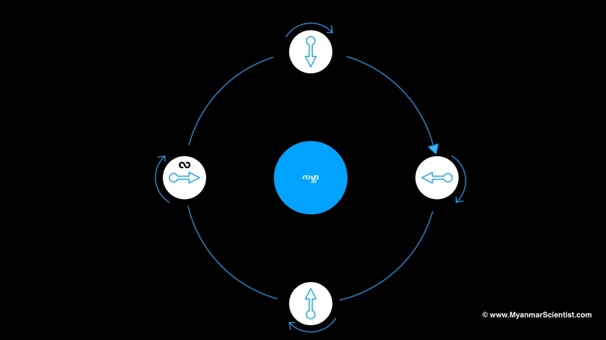

တချို့ကလဲ စက မလည်လို့ တစ်ခြမ်းပဲ အမြဲ မြင်ရတာပေါ့လို့ ဖြေကြမယ် ထင်ပါတယ်။ (လက ပြားနေလို့ပါ လို့တော့ မဖြေကြ ပါနဲ့ဗျာ။ မပြားပါဘူး။) ဒီ အဖြေ ကလဲ မမှန်ပါဘူး။ ဘာလို့ဆို ကမ္ဘာက သူ့ဝင်ရိုးပေါ်မှာ လည်နေသလိုပဲ လကလဲသူ့ဝင်ရိုး ပေါ်မှာ လည်နေတာ မို့ပါ။ ဒါဆို ဒီလို လက သူ့ဝင်ရိုးပေါ် လည်နေတယ်ဆို ဘာလို့ လရဲ့ တဖက်ကို မမြင်ရတာ လဲဗျ။
ဘာလို့ လက ကမ္ဘာကို တစ်ဖက်ပဲ အမြဲ မျက်နှာ မူနေရတာလဲသိဖို့ဆိုရင် ကမ္ဘာရဲ့ အပြင်ထွက်ပြီး ခပ်လှမ်းလှမ်း လနဲ့ ကမ္ဘာကို ခြုံပြီး မြင်ရတဲ့ အရပ်ကနေ ထွက်ပြီး ကြည့်လိုက်မယ်ဆို အလွယ်တကူပဲ မြင်သာမှာ ဖြစ်ပါတယ်။ ဒါပေမယ့် ဒီလို ထွက်ကြည့်ဖို့ ကျွန်တော်တို့ အတွက် မဖြစ်နိုင်တာမို့ စိတ်ကူးနဲ့ပဲ ထွက်ပြီး ကြည့်ကြရ အောင်ပါ။
လက ကမ္ဘာကို ၂၇.၃ ရက်ကို တစ်ပတ် ပတ်ပါတယ်။ ဒီလို ပတ်ရင်းနဲ့လဲ လက သူ့ဝင်ရိုးပေါ်မှာ သူလည်နေပါ သေးတယ်။ ဒီလို ဝင်ရိုး တစ်ပတ် ပြည့်အောင် လည်ရတဲ့ အချိန်ကလဲ ၂၇.၃ ရက်ပဲ ဖြစ်နေပါတယ်။ ဒီအခါ သူက ကမ္ဘာကို ပတ်ရင်း လည်သွားတာမို့ ကမ္ဘာက ကြည့်တော့ မျက်နှာ အမြဲ မူထားသလိုမျိုး ဖြစ်နေတာပါ။
ဒါကို အောက်က ပုံမှာ သရုပ်ပြ ထားပါတယ်။ ဒီပုံမှာ ကြည့်ရင် လရဲ့ ကမ္ဘာကို မျက်နှာမူ နေတဲ့ ဖက်ခြမ်းကို မြှားနဲ့ ပြထားပါတယ်။ ဒီမျှားဟာ ကမ္ဘာကို လ က တစ်ပတ် ပတ်မိ သွားချိန်မှာ သူ့ရဲ့ ဦးတည်ရာ ကလဲ၃၆၀ ဒီဂရီ တစ်ပတ် လည်သွားတယ် ဆိုတာကို တွေ့ရမှာ ဖြစ်ပါတယ်။

လဟာ လွန်ခဲ့နှစ် နှစ်သန်း ၄,၅၀၀ လောက်က စဖြစ်လာတယ်လို့ ယူဆကြပါတယ်။ အဲ့သည်အချိန် တုန်းကတော့ လရဲ့ လည်ပတ်နှုန်းက အခုထက် အများကြီး ပိုပြီး မြန်ခဲ့ပါတယ်။ ဒါဆို ဘာ့ကြောင့် အခုလို နှေးသွားရ တာပါလဲ။
ကမ္ဘာရဲ့ ဆွဲအားက လအပေါ်မှာ အများကြီး သက်ရောက်မှု ရှိပါတယ်။ လရဲ့ ဆွဲငင်အားကြောင့် ကမ္ဘာပေါ်မှာ ဒီရေ အတက်အကျ ရှိပါတယ်။ ဒီလိုပဲ ကမ္ဘာ့ ဆွဲအားကြောင့်လဲ လပေါ်မှာ ဒီတက် ဒီကျ ဖြစ်ပါတယ်။ ကမ္ဘာရဲ့ ဆွဲအားက လဆွဲအားထက် ၆ ဆတောင် ပိုကြီးတာမျို့ လအပေါ် ကမ္ဘာက သက်ရောက်တဲ့ မြေဆွဲအားကလဲ ပိုပြီး များပါတယ်။
ဒီလို ကမ္ဘာ့ မြေဆွဲအားကြောင့် လမှာ “ဒီ” အတက်အကျ ဖြစ်လာပေမယ့် လပေါ်မှာ ရေ မရှိပါဘူး။ ဒီအစား လရဲ့မြသားထုဟာ ကမ္ဘာဖက်ကို ဖေါင်းပြီး ကြွတက်လာပါတယ်။ ဒါကြောင့် လဟာ တကယ်တမ်းကျ ဘောလုံးလို လုံးဝန်း မနေပဲ ကမ္ဘာဖက်ကို နည်းနည်းလေး ခပ်ဆူဆူလေး ဖြစ်ပနေပါတယ်။
ဒါပေမယ့် လရဲ့ လည်ပတ်နှုန်းက မြန်နေတာမို့ ဒီ ဖေါင်းနေတဲ့ အပိုင်းလေးဟာလဲ တစ်ချိန်လုံး ပြောင်းနေပါတယ်။ (ကမ္ဘာပေါ်က ဒီရေ အတက်အကျနဲ့ ယှဉ်ပြီး မြင်ကြည့်နိုင်ပါတယ်။) ဒီလို မြေသား ဖေါင်းတဲ့နေရာ ပြောင်းတာဟာ လရဲ့ လည်ပတ်နှုန်းကို နှေးကွေး သွားစေပါတယ်။ တဖြည်းဖြည်းနဲ့ နှေးသွားပြီး နောက်ဆုံး လရဲ့ တစ်ဖက်ခြမ်းဟာ ကမ္ဘာကို တစ်ချိန်လုံး မျက်နှာမူတဲ့ အချိန်ထိ နှေးသွားပါတယ်။ ဒီ အဆင့် ရောက်သွားတဲ့ အခါ Tidally locked ဖြစ်သွားပါတယ်။ ဒီအခါ လရဲ့ ကမ္ဘာကို တစ်ပတ်ပတ်ဖို့ ကြာချိန်နဲ့ လက သူ့ဝင်ရိုးပေါ် တစ်ပတ်ပြည့်အောင် လည်ဖို့ ကြာချိန်ဟာ တူညီသွားပါတော့တယ်။
ဒီလို Tidal Locked ဖြစ်သွားပြီ ဆိုရင်တော့ လရဲ့ မျက်နှာဟာ အမြဲတမ်း ကမ္ဘာကို မျက်နှာမူသွား တော့မှ ဖြစ်ပါတယ်။
— မောင်သူရ (သိပ္ပံ) —